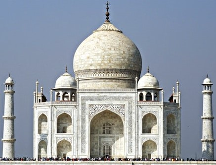

Taj Mahal
The Taj Mahal lit. 'Crown of the Palace', is an ivory-white marble mausoleum on the southern bank of
the river Yamuna in the Indian city of Agra.
It was commissioned in 1632 by the Mughal emperor Shah Jahan (reigned from 1628 to 1658) to house the tomb of
his favourite wife, Mumtaz Mahal; it also houses the tomb of Shah Jahan himself.
The tomb is the centrepiece of a 17-hectare (42-acre) complex, which includes a mosque and a guest house, and is
set in formal gardens bounded on three sides by a crenellated wall.
Agra Fort

Agra Fort is a historical fort in the city of Agra in India. It was the main residence of the
emperors of the Mughal Dynasty until 1638, when the capital was shifted from Agra to Delhi.
Before capture by the British, the last Indian rulers to have occupied it were the Marathas.
In 1983, the Agra fort was inscribed as a UNESCO World Heritage site.
It is about 2.5 km northwest of its
more famous sister monument, the Taj Mahal.
The fort can be more accurately described as a walled city.